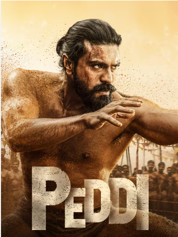

Ram Charan's massive action drama Peddi is ruling the box office, but millions of fans are already searching for the Peddi OTT release date. If you missed it in theaters or just want to re-watch the epic sports drama from the comfort of your home, here is everything you need to know about its digital premiere.
Peddi Digital Streaming Rights
Following a massive bidding war among top streaming giants, the official post-theatrical streaming rights for Peddi have been secured by a major OTT platform for a record-breaking price. The movie will be available to stream in multiple languages including Telugu, Hindi, Tamil, Malayalam, and Kannada.
| Movie Detail | Information |
|---|---|
| Movie Name | Peddi (2026) |
| Lead Actor | Ram Charan, Janhvi Kapoor |
| Expected OTT Platform | Netflix / Amazon Prime (TBA) |
| Expected OTT Release Date | Late July / August 2026 |
When Will Peddi Release on OTT?
According to the standard theatrical window agreements, blockbuster movies in India typically release on OTT platforms 45 to 60 days after their theatrical release. Given its incredible box office performance, the makers might delay the digital premiere slightly to maximize theater revenue.
🍿 Get Instant Notifications!
Want to be the first to know the exact date and time Peddi drops online? Download the District App for official OTT release alerts and exclusive movie content.
Download District AppWhat to Expect from the OTT Version?
The digital release of Peddi is expected to feature 4K Dolby Vision video quality and Dolby Atmos sound, providing a cinematic experience at home. There are also rumors that the OTT version might include a few extended scenes that were cut from the theatrical print to reduce runtime.
Stay tuned to this page as we will update the exact streaming link as soon as the official announcement is made!
